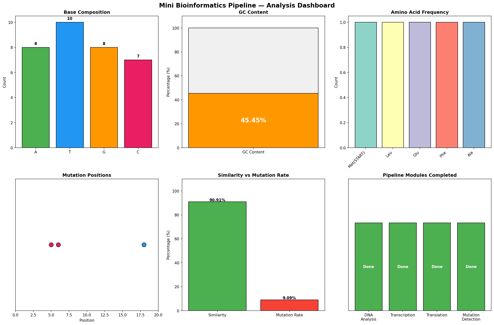

Generated: 25-03-2026 15:09:16 | Author: Padma Shree
| Property | Value |
|---|---|
| Length | 33 bases |
| GC Content | 45.45% |
| AT/GC Ratio | 1.2 |
| A count | 8 |
| T count | 10 |
| G count | 8 |
| C count | 7 |
| Complement | TACGAACTTAAACGGATTCCGATCGATCGTACG |
| Reverse Complement | GCATGCTAGCTAGCCTTAGGCAAATTCAAGCAT |
| Interpretation | Balanced |
RNA Transcript:
Protein Codons:
STOP codon found: Yes | Total codons: 6
| Position | Original | Mutated | Type |
|---|---|---|---|
| 5 | T | A | Transversion |
| 6 | T | A | Transversion |
| 18 | A | G | Transition |
